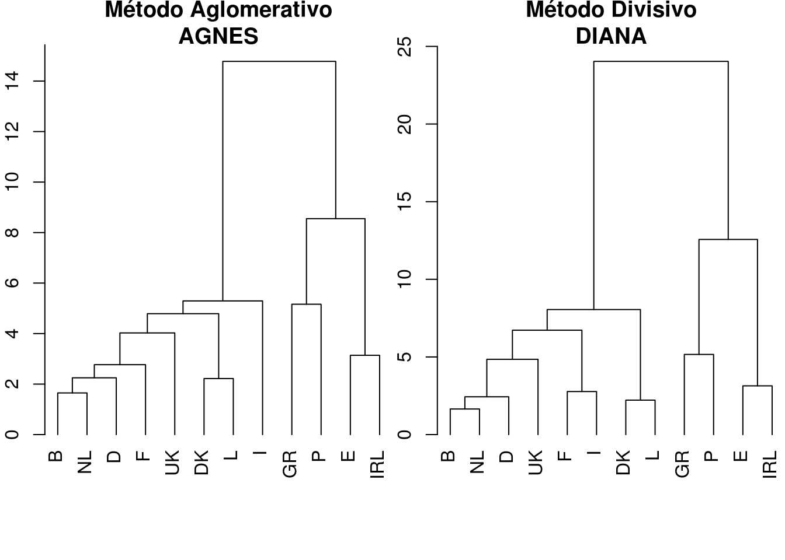
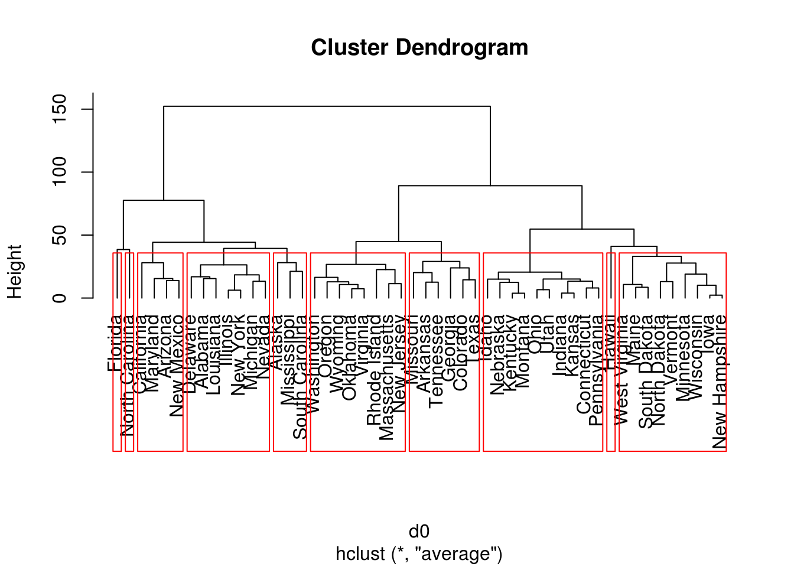
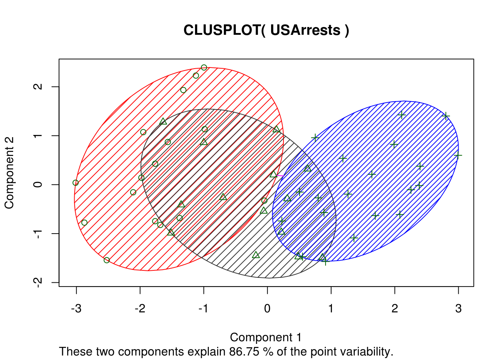

Capítulo 3 Análise de Agrupamentos
Nesta seção serão utilizados as seguinte bibliotecas do R.
autoLib(c('cluster', 'dplyr'))## Loading required package: cluster## Loading required package: dplyr##
## Attaching package: 'dplyr'## The following objects are masked from 'package:stats':
##
## filter, lag## The following objects are masked from 'package:base':
##
## intersect, setdiff, setequal, union## cluster dplyr
## TRUE TRUEknitr::opts_knit$set(fig.width=5, fig.height=5, fig.align='center')3.1 Processo de Agrupamento
Um agrupamento pode ser construído de duas formas:
- hierarquia: funções agnes, diana, mona e hclust;
- particionamento: funções pam, clara, fanny e kmeans
3.2 Métodos de Agrupamento
Um agrupamento pode gerar os grupos utilizando algum dos métodos a seguir (mais comuns):
- average: média ou UPGMA (média dissimilaridade)
- single: simple: (vizinho mais próximo)
- complete: completa (vizinho mais distante)
- ward: Ward ou método da mínima variância.
- weighted/mcquitty: média ponderada ou WPGMA
3.3 Distâncias usadas para cálculo de agrupamentos
Para se calcular a distância entre os componentes, pode-se utilizar as funções a seguir (mais comuns):
- euclidian: euclideana, raiz da soma do quadrado das diferenças entre os pontos/observações (distância no plano cartesiano)
- mahalanobis: Mahalanobis, distância de cada valor em relação à média e covariância (também conhecida como distância estatística). OBS é capaz de trabalhar a distância para observações com repetições. (kernel da normal multivariada)
- manhattan: Manhattan, soma das diferenças média absoluta (L1 norm)
- maximum: Máxima, máxima distância entre dois componentes (supremum norm)
- canberra: Canberra, uso em valores não negativos (p.ex. contagem) \(\sum(|x_i - y_i| / |x_i + y_i|)\)
- binary: Binária, para valores do tipo “on”/“off” em que \(0\) representa desligado e números maiores que \(0\). A distância é a proporção de “on`s”.
- minkowski: Minkowski, P-Norm ou p-ésima raíz da soma de potência p das diferenças.
3.4 Exemplo: Força de trabalho agrícola na UE (1993)
Estes conjunto registra os dados da produção per capita e o percentual da população que trabalha na agricultura em cada país da UE em 1993.
data(agriculture)
## Calcula matriz de dissimilaridade usando distância euclidiana
## e sem padronização das variáveis
print(daisy(agriculture, metric = "euclidean", stand = FALSE),
digits = 2)## Dissimilarities :
## B DK D GR E F IRL I L NL P
## DK 5.4
## D 2.1 3.4
## GR 22.3 22.6 22.7
## E 9.8 11.2 10.4 12.6
## F 3.4 3.5 2.7 20.1 8.1
## IRL 12.7 13.3 13.1 9.6 3.1 10.6
## I 5.8 5.5 5.4 17.4 5.7 2.8 7.9
## L 4.3 2.2 2.3 24.0 12.1 4.1 14.6 6.7
## NL 1.6 5.1 2.4 20.8 8.3 2.2 11.2 4.2 4.7
## P 17.2 17.9 17.7 5.2 7.4 15.2 4.6 12.5 19.2 15.7
## UK 2.8 8.1 4.9 21.5 9.0 5.3 12.1 6.7 7.1 3.1 16.3
##
## Metric : euclidean
## Number of objects : 12## Usa método de particionamento pelo meióide
## Partitioning Around Medoids (PAM)
plot(pam(agriculture, 2), which.plots = 1)
## Gráfico dendograma usando método aglomeração mais próximo
## agnes
plot(agnes(agriculture), which.plots = 2, hang = -1)
## Plot dissimilaridade usando método divisivo
## diana
plot(diana(agriculture), which.plots = 1)
## Usando agnes e diana para conjunto agricultura
par(mfrow=c(1,2), mar=c(3,2,2,0))
plot(agnes(agriculture), which.plots = 2, hang = -1,
main = "Método Aglomerativo\nAGNES")
plot(diana(agriculture), which.plots = 2, hang = -1,
main = "Método Divisivo\nDIANA")
3.5 Exemplo cluster USArrest
Neste exemplo vamos utilizar o conjunto USArrest, disponível na instalação padrão do R.
data(USArrests)
#?USArrests
d0 = dist(USArrests) # euclidian
hc = hclust(d0, "average")
plot(hc, hang = -1)
# Criar 10 grupos
memb = cutree(hc, k = 10)
# Anota no gráfico os 10 grupos
rect.hclust(hc, 10)
Como exercício, será trabalhado a seguinte situação: Gostaríamos de saber quais são os estados que compoem o grupo 1 e qual a média de assalto (variável Assault) para cada grupo.
# Cria conjunto de dados a partir da divisão inicial com
# 10 grupos, com as variáveis State e grp10
dAssault = data.frame(State = names(memb), grp10 = memb)
# Utilizando a biblioteca dplyr, transformamos o conjunto
# dAssault para criar uma nova variável grp3
dAssault = dAssault %>% mutate(grp3 = cutree(hc, k = 3), Assault = USArrests$Assault)
# calculamos a média por cada grupo grp10
dAssault %>% group_by(grp10) %>% summarize(media=mean(Assault))## # A tibble: 10 × 2
## grp10 media
## <int> <dbl>
## 1 1 247.57143
## 2 2 267.00000
## 3 3 288.75000
## 4 4 195.33333
## 5 5 112.40000
## 6 6 335.00000
## 7 7 46.00000
## 8 8 64.55556
## 9 9 156.75000
## 10 10 337.00000# selecionamos os estados que estão associados ao grupo 1
dAssault %>% filter(grp10 == 1)## State grp10 grp3 Assault
## 1 Alabama 1 1 236
## 2 Delaware 1 1 238
## 3 Illinois 1 1 249
## 4 Louisiana 1 1 249
## 5 Michigan 1 1 255
## 6 Nevada 1 1 252
## 7 New York 1 1 254# calculamos a média e o número de estados por cada grupo grp3
dAssault %>%
group_by(grp3) %>%
summarize(media=mean(Assault), prop = sum(Assault)/sum(USArrests$Assault),
qtd = n()) %>% arrange(prop)## # A tibble: 3 × 4
## grp3 media prop qtd
## <int> <dbl> <dbl> <int>
## 1 3 87.5500 0.2050832 20
## 2 2 173.2857 0.2841415 14
## 3 1 272.5625 0.5107754 16Pode-se usa a ANOVA para avaliar o número de grupos, confira o código a seguir
# ANOVA para grp10
aovGrp10 = aov(Assault ~ as.factor(grp10), data = dAssault)
summary(aovGrp10)## Df Sum Sq Mean Sq F value Pr(>F)
## as.factor(grp10) 9 335715 37302 324.5 <2e-16 ***
## Residuals 40 4598 115
## ---
## Signif. codes: 0 '***' 0.001 '**' 0.01 '*' 0.05 '.' 0.1 ' ' 1# ANOVA para grp3
aovGrp3 = aov(Assault ~ as.factor(grp3), data = dAssault)
summary(aovGrp3)## Df Sum Sq Mean Sq F value Pr(>F)
## as.factor(grp3) 2 304387 152194 199.1 <2e-16 ***
## Residuals 47 35926 764
## ---
## Signif. codes: 0 '***' 0.001 '**' 0.01 '*' 0.05 '.' 0.1 ' ' 1# OBS: todo modelo linear aumenta a explicação com a
# adição de novas variáveis ao modelo, faz-se necessário
# criar uma penalização para auxiliar na escolha entre modelos
# além de definir um critério
(mseGrp10 = sqrt(summary(aovGrp10)[[1]]$`Mean Sq`[2]))## [1] 10.72138(mseGrp3 = sqrt(summary(aovGrp3)[[1]]$`Mean Sq`[2]))## [1] 27.64738# critério mse - log(num fatores)
mseGrp10 - log(10)## [1] 8.418795mseGrp3 - log(3)## [1] 26.54877Por fim, a apresentação dos grupos, também pode ser feita com a função clusplot
clusplot(USArrests, cutree(hc, k = 3), shade = TRUE, color = TRUE,
col.clus = c("red", "grey20", "blue"))